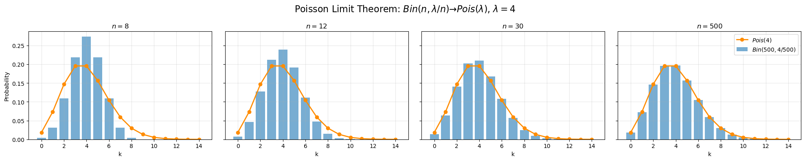
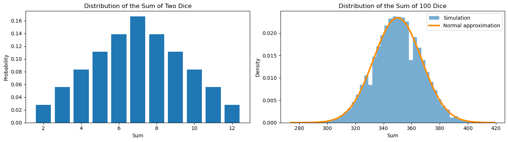
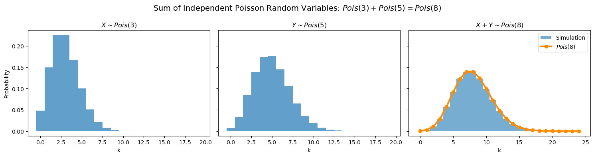

In the previous lectures, probabilities were assigned directly to events in a probability space \((\Omega,\mathcal F,P)\). In practice, however, we are often interested in numerical quantities associated with the outcomes of an experiment, such as the number of heads obtained when tossing a coin several times, the number of customers arriving at a store during one hour, or the height of a randomly selected individual.
Such quantities are modeled by random variables. To study them, we first introduce probability distributions on the real line.
1.1 Borel \(\sigma\)-Algebra
The Borel \(\sigma\)-algebra on \(\mathbb R\), denoted by \(\mathcal B(\mathbb R)\), is the smallest \(\sigma\)-algebra containing all open subsets of \(\mathbb R\).
Elements of \(\mathcal B(\mathbb R)\) are called Borel sets. In particular, every open interval, closed interval, half-open interval, countable union, countable intersection, and complement of such sets belongs to \(\mathcal B(\mathbb R)\).
1.2 Measurable Functions and Random Variables
Let \((\Omega,\mathcal F)\) and \((\mathbb R,\mathcal B(\mathbb R))\) be measurable spaces. A function
In other words, the binomial distribution converges to the Poisson distribution when the number of trials becomes large and the success probability becomes small in such a way that the expected number of successes remains approximately constant.
Show Python code
import numpy as npimport matplotlib.pyplot as pltfrom math import comb, factorial, explambda_ =4ns = [8, 12, 30, 500]x = np.arange(0, 15)pois = np.array([ lambda_**k * exp(-lambda_) / factorial(k)for k in x])fig, axes = plt.subplots(1, 4, figsize=(20, 4), sharey=True)for ax, n inzip(axes, ns): p = lambda_ / n binom = np.array([ comb(n, k) * p**k * (1-p)**(n-k)for k in x ])# Binomial distribution (bars) ax.bar( x, binom, alpha=0.6, label=fr"$Bin({n},{lambda_}/{n})$" )# Poisson distribution (line) ax.plot( x, pois,"o-", color="darkorange", linewidth=2, label=fr"$Pois({lambda_})$" ) ax.set_title(fr"$n={n}$") ax.set_xlabel("k") ax.grid(alpha=0.3)axes[0].set_ylabel("Probability")fig.suptitle(rf"Poisson Limit Theorem: $Bin(n,\lambda/n)\to Pois(\lambda)$, $\lambda={lambda_}$", fontsize=16)axes[-1].legend(loc="upper right")plt.tight_layout()plt.show()

4 Independence of Random Variables
Two discrete random variables \(\xi\) and \(\eta\) are called independent if
\[
P(\xi=x,\eta=y)
=
P(\xi=x)P(\eta=y)
\]
for all possible values \(x\in X_\xi\) and \(y\in X_\eta\).
Similarly, a collection of random variables \(\xi_1,\ldots,\xi_n\) is called mutually independent if
import numpy as npimport matplotlib.pyplot as pltnp.random.seed(42)# =====================================================# Sum of 2 dice (exact distribution)# =====================================================die = np.ones(6) /6conv = np.convolve(die, die)sums2 = np.arange(2, 13)# =====================================================# Sum of 100 dice (simulation)# =====================================================N =100_000sample100 = np.random.randint(1, 7, size=(N, 100)).sum(axis=1)# =====================================================# Normal approximation# =====================================================mu =100*3.5sigma = np.sqrt(100*35/12)x = np.linspace( sample100.min(), sample100.max(),1000)normal_pdf = (1/ (sigma * np.sqrt(2* np.pi))* np.exp(-(x - mu) **2/ (2* sigma **2)))# =====================================================# Plot# =====================================================fig, axes = plt.subplots(1, 2, figsize=(14, 4))# Left panelaxes[0].bar(sums2, conv)axes[0].set_title("Distribution of the Sum of Two Dice")axes[0].set_xlabel("Sum")axes[0].set_ylabel("Probability")# Right panelaxes[1].hist( sample100, bins=50, density=True, alpha=0.6, label="Simulation")axes[1].plot( x, normal_pdf, color="darkorange", linewidth=3, label="Normal approximation")axes[1].set_title("Distribution of the Sum of 100 Dice")axes[1].set_xlabel("Sum")axes[1].set_ylabel("Density")axes[1].legend()plt.tight_layout()plt.show()

Show Python code
import numpy as npimport matplotlib.pyplot as pltfrom math import factorial, expnp.random.seed(42)# =====================================================# Parameters# =====================================================lambda1 =3lambda2 =5N =100_000# =====================================================# Simulation# =====================================================X = np.random.poisson(lambda1, size=N)Y = np.random.poisson(lambda2, size=N)Z = X + Y# =====================================================# Theoretical distribution# =====================================================lam = lambda1 + lambda2k = np.arange(0, 25)pois_theory = np.array([ exp(-lam) * lam**i / factorial(i)for i in k])# =====================================================# Plot# =====================================================fig, axes = plt.subplots(1, 3, figsize=(15, 4), sharey=True)# X ~ Pois(lambda1)axes[0].hist( X, bins=np.arange(-0.5, 20.5, 1), density=True, alpha=0.7)axes[0].set_title(rf"$X\sim Pois({lambda1})$")axes[0].set_xlabel("k")axes[0].set_ylabel("Probability")# Y ~ Pois(lambda2)axes[1].hist( Y, bins=np.arange(-0.5, 20.5, 1), density=True, alpha=0.7)axes[1].set_title(rf"$Y\sim Pois({lambda2})$")axes[1].set_xlabel("k")# X + Yaxes[2].hist( Z, bins=np.arange(-0.5, 25.5, 1), density=True, alpha=0.6, label="Simulation")axes[2].plot( k, pois_theory,"o-", color="darkorange", linewidth=3, markersize=6, label=rf"$Pois({lam})$")axes[2].set_title(rf"$X+Y\sim Pois({lam})$")axes[2].set_xlabel("k")axes[2].legend()fig.suptitle(rf"Sum of Independent Poisson Random Variables: "rf"$Pois({lambda1})+Pois({lambda2})=Pois({lam})$", fontsize=14)plt.tight_layout()plt.show()

5 Discrete Random Vectors
So far we have studied a single random variable \(\xi:\Omega\to\mathbb R\). In many applications, however, several random quantities are observed simultaneously. This leads to the notion of a random vector.
5.1 Definition
A 2-dimensional discrete random vector is a pair of discrete random variables
\[
(\xi,\eta).
\]
More generally,
\[
(\xi_1,\xi_2,\dots,\xi_n).
\]
For every outcome \(\omega\in\Omega\), the random vector assigns a point